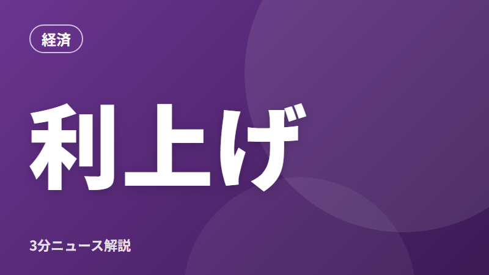

オーストラリアが利上げ。海外の金利の動きは日本にも関係ある？
文字

3行まとめ
- オーストラリアの中央銀行が、政策金利を4.6%から4.85%に引き上げた
- 9人の委員のうち3人は「据え置き」を支持し、意見が割れた
- 海外の金利の動きは、円相場を通じて日本の物価にも影響する
何が起きた？
オーストラリアの中央銀行（RBA、日本の日銀にあたる機関）は11月3日、政策金利を0.25%引き上げて4.85%にすると決めました。
ザイFX！の報道によると、決定は6対3で、3人の委員は金利を据え置くべきだと考えていました。前回の会議までは4.6%でした。
なぜ大事？
中央銀行が金利を上げるのは、主に物価の上がりすぎを抑えるためです。お金を借りるコストを上げて、世の中のお金の動きを少し落ち着かせます。
日本でも、日銀が10月30日に「物価の上がり方が目標の2%に到達した」と判断し、これからは利上げを続ける方針を示しています。海外と日本、どちらも「物価を抑える」方向に動いているのが今の特徴です。
私たちの生活への影響は？
円相場
海外の金利が上がり、日本との金利の差が広がると、円安になりやすくなります。円安は輸入品の値上がりにつながります。今回は利上げ後に豪ドルがむしろ下がっており、金利だけで為替が決まるわけではない点にも注意が必要です。
外貨預金
豪ドルの外貨預金をしている人にとっては、金利の動きと為替の動きの両方が損得に関わります。
これからの注目点
- アメリカや日本の中央銀行が、次にどう動くか
- 日銀の12月の会議で追加の利上げがあるか
出典
この記事はAIの補助を受けて作成し、上記の出典で内容を確認しています。投資やローンの判断はご自身でお願いします。誤りに気づいた方はお問い合わせからお知らせください。
この記事のテーマ#金利・円相場